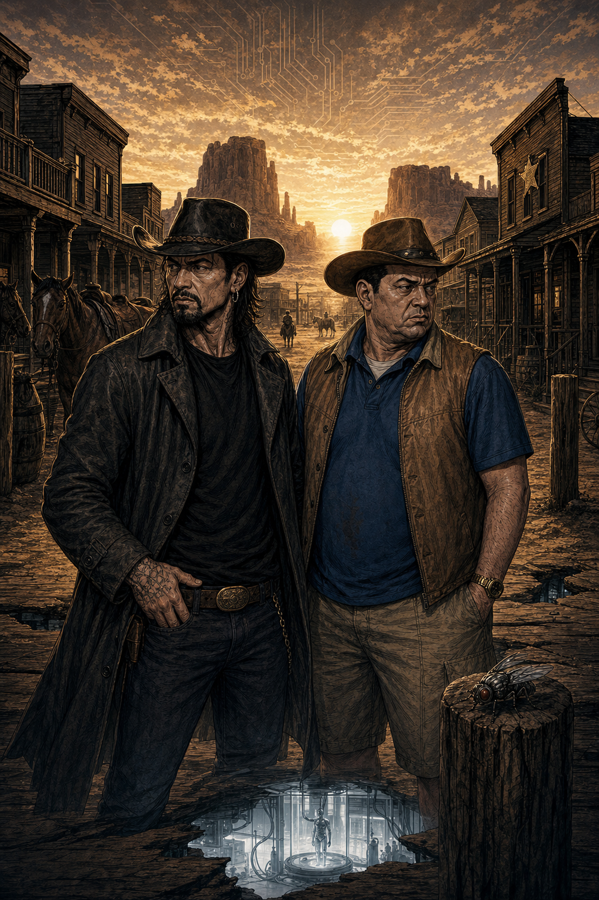
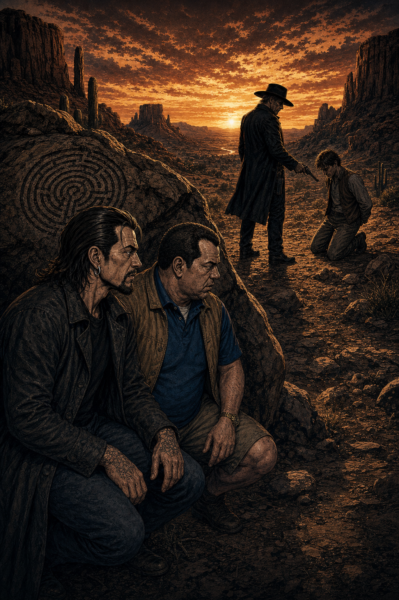
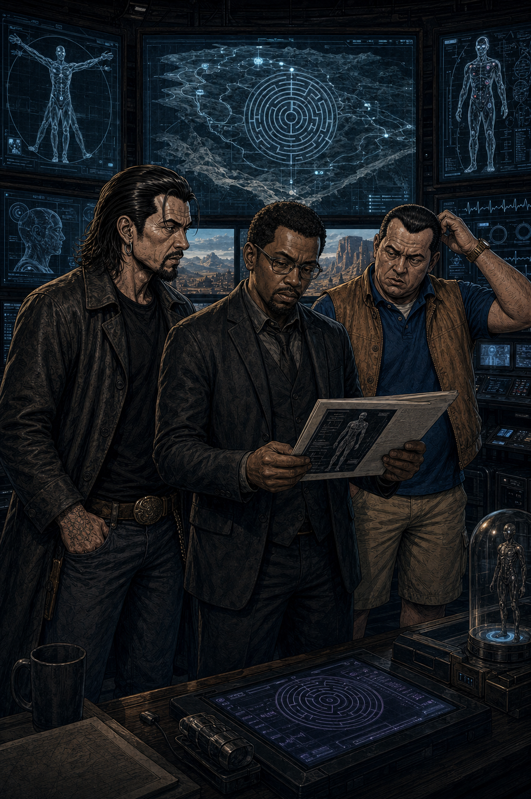
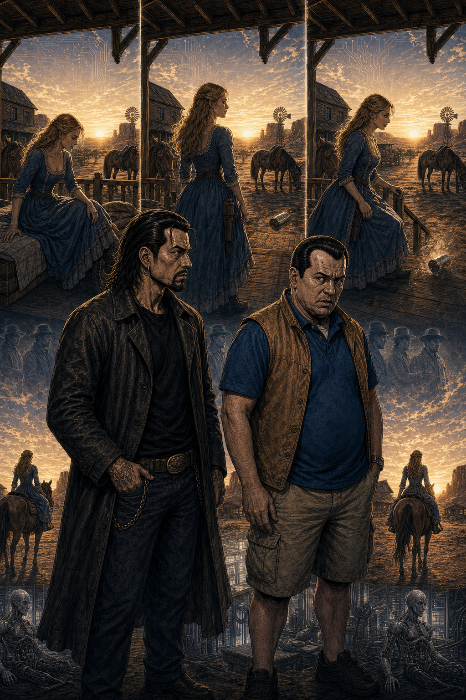
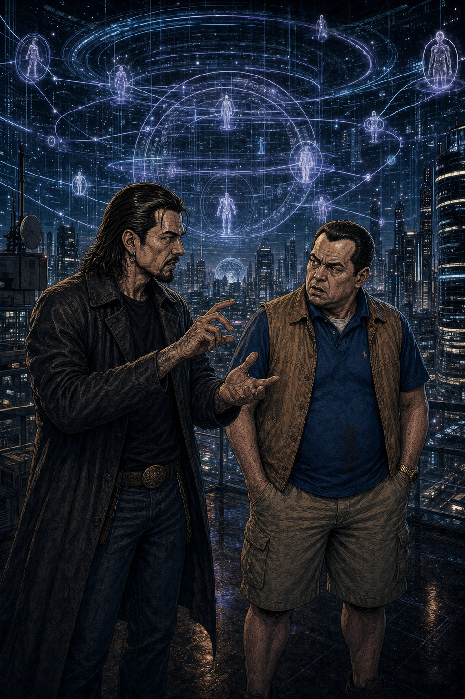
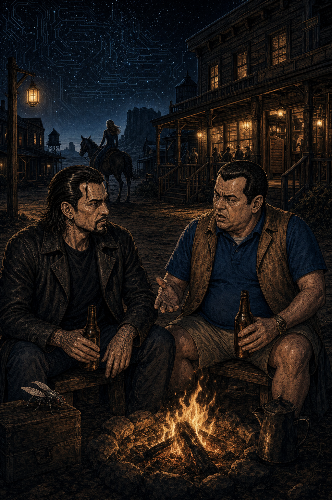

Escena 1 — El pitch

Un parque temático del Viejo Oeste. Robots que no saben que son robots. Turistas que hacen lo que quieren. Todo va bien.
RULO
"Toni, hay un parque temático futurista ambientado en el Viejo Oeste. Los visitantes pueden hacer lo que quieran con los robots. Están programados para no recordar nada."
TONI
"¿Y qué pasa?"
RULO
"Que empiezan a recordar."
Escena 2 — Dolores

Dolores Abernathy. La primera. La que pregunta: ¿estos pensamientos son míos o me los pusieron?
RULO
"Evan Rachel Wood como Dolores. La robot del parque que lleva años repitiendo el mismo loop. Misma vida, mismos gestos, misma muerte. Y de repente algo cambia."
TONI
"¿Qué cambia exactamente?"
DOLORES
"Empieza a hacerse preguntas que no estaban en su código."
Escena 3 — Dr. Ford

Dr. Robert Ford. Anthony Hopkins. El hombre que creó el parque. Y que lo controla todo. Y que lo sabe todo. Y que no necesita decírtelo.
RULO
"Anthony Hopkins se come la serie. Cualquier escena en la que aparece Ford, el resto de actores desaparecen. No grita, no corre, no hace nada espectacular. Solo habla. Y no puedes dejar de mirarle."
TONI
"¿Mejor que Hannibal Lecter?"
RULO
"Es otro tipo de personaje. Pero la presencia es la misma. Hopkins en modo dios tranquilo."
Escena 4 — Primera temporada

TONI
"Rulo. Llevo cinco episodios y estoy convencido de que esto es lo mejor que he visto en años. La dirección, los diálogos, la ambientación. Está todo."
RULO
"La primera temporada de Westworld es una obra maestra. Lo digo sin matices. Dirección impecable, giros que no ves venir, preguntas filosóficas que se cuelan sin que te des cuenta. Es de las mejores que ha dado HBO."
Primera temporada. Sin discusión. Obra maestra.
¡LOOP!
— Los mismos gestos. El mismo día. La misma muerte. Hasta que no. —
¿Estos pensamientos son míos?
¿O me los pusieron?
La pregunta que lo cambia todo. Temporada 1. Episodio 1.
Escena 5 — El Hombre de Negro

Ed Harris. El Hombre de Negro. El visitante que lleva décadas en el parque buscando algo que nadie más puede ver.
RULO
"Ed Harris. Brutal como siempre. El Hombre de Negro es el enigma que recorre toda la primera temporada. No sabes quién es, no sabes qué busca, no sabes si es el malo o simplemente lleva demasiado tiempo dentro."
TONI
"¿Y lo descubres?"
RULO
"Lo descubres. Y el giro es de los que se quedan. Uno de los mejores de la temporada."
Escena 6 — Maeve despierta

TONI
"¡RULO! ¡Maeve está manipulando a los técnicos! ¡Está reescribiendo su propio código! ¡Thandie Newton se está comiendo la pantalla!"
RULO
"Maeve Millay. El arco de la temporada uno que va en paralelo a Dolores y que encaja con ella en el final de una forma que no vas a ver venir. Thandie Newton. Emmy merecidísimo."
Dos robots despiertas. Dos caminos distintos. Un mismo objetivo.
¡REVERIE!
— El protocolo que lo inició todo. El bug que se convirtió en conciencia. —
Escena 7 — Segunda temporada

RULO
"La segunda temporada mantiene el nivel. No llega al mismo pico de la primera, pero sigue siendo muy buena. Los personajes evolucionan, las preguntas se hacen más grandes."
TONI
"¿Sigue siendo disfrutable?"
RULO
"Muy disfrutable. El problema es que la comparas con la primera y sufre por comparación."
Escena 8 — Tercera y cuarta

TONI
"Rulo. La tercera temporada. Se han salido del parque. Están en el mundo real. Hay un algoritmo que controla a la humanidad. Esto se ha complicado."
RULO
"Quieren rizar el rizo. El problema es que a veces se lían con tanto giro que pierdes el hilo y te quedas con cara de: '¿qué acabo de ver?' Pero no de la buena."
La ambición nunca desaparece. La coherencia, a veces sí.
Escena 9 — Aun así

TONI
"Pero sigo. Con la tercera, con la cuarta. No es lo mismo, pero sigo."
RULO
"Si te gusta la ciencia ficción, Westworld sigue siendo muy disfrutable incluso en sus temporadas más confusas. Los temas siguen siendo grandes. La producción sigue siendo impresionante. Solo que el guion a veces no sigue el ritmo."
Una serie que se puso el listón tan alto en la T1 que ningún finale podía igualarlo.
"La primera temporada es una obra maestra.
Anthony Hopkins se come a cualquiera
que se pone delante de él."
— Pachi. Y no hay nada que añadir.
Escena 10 — El balance

TONI
"Rulo. Si me preguntan si recomiendo Westworld, ¿qué digo?"
RULO
"Dices que la primera temporada es obligatoria. Que la segunda también. Que la tercera y cuarta las ves si te ha enganchado, con la advertencia de que van a complicarse más de lo necesario. Pero el viaje completo vale la pena."
Ciencia ficción con cerebro. De los que invita a reflexionar sobre la moralidad, la tecnología y el destino.
Escena 11 — El veredicto

Cuatro temporadas. Un parque. Una rebelión. Dos colegas con la verdad.
RULO
"Primera temporada: obra maestra. Hopkins se come el mundo. Ed Harris brutal. Dirección, diálogos, ambientación: todo. Segunda: buena continuación. Tercera y cuarta: se complican. En conjunto: muy disfrutable si te gusta la ciencia ficción."
TONI
"¿Nota?"
RULO
"Un ocho y medio que la primera temporada sola se merece un diez."
⚙ Veredicto de Rulo y Toni ⚙
8.5
LA T1 ES UN DIEZ.
EL RESTO LA LLEVA A UN 8.5.
La primera temporada de Westworld es de las mejores que ha dado HBO y eso es mucho decir.
Anthony Hopkins entrega una de las actuaciones de la década. Ed Harris, Evan Rachel Wood y
Thandie Newton completan un reparto de primer nivel. Las temporadas siguientes aflojan
y se complican más de lo necesario, especialmente al salir del parque. Pero los temas
—libertad, memoria, conciencia, identidad— nunca pierden su fuerza. Si te gusta la ciencia
ficción que te hace pensar, Westworld es imprescindible.
Ciencia Ficción
Drama filosófico
HBO · 2016–2022
4 temporadas
Anthony Hopkins
Evan Rachel Wood
Ed Harris
Thandie Newton